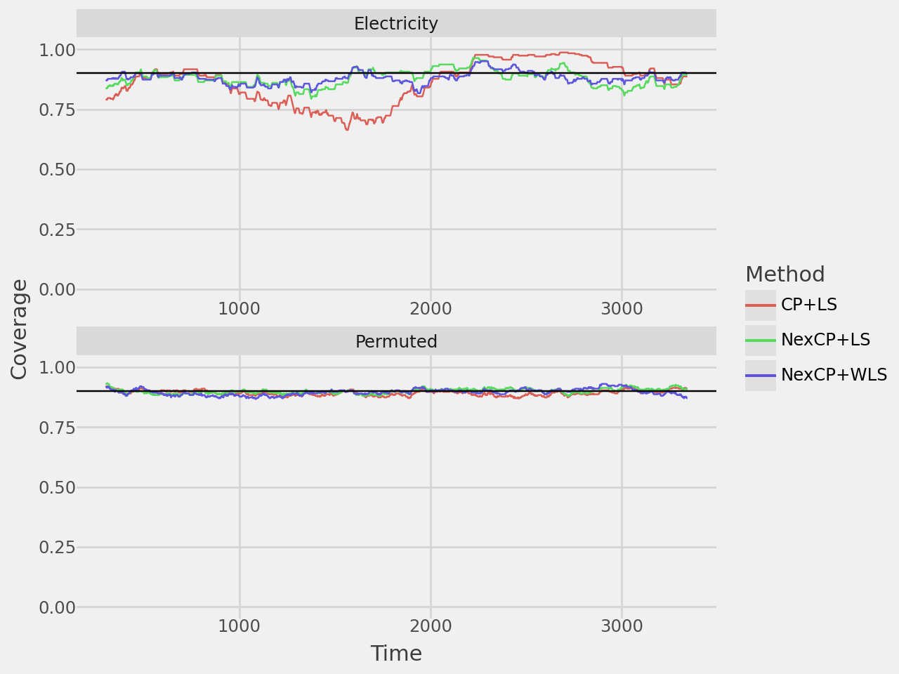
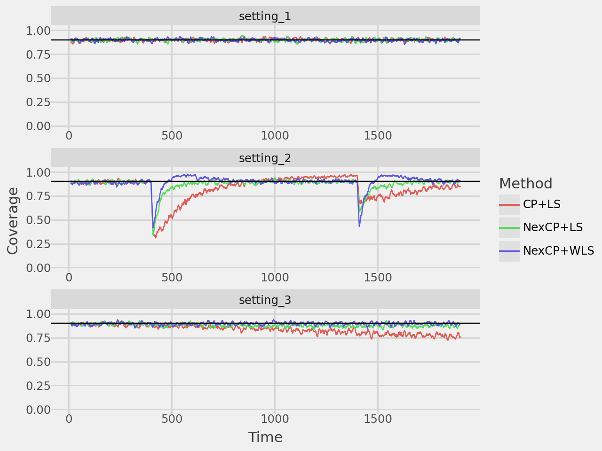
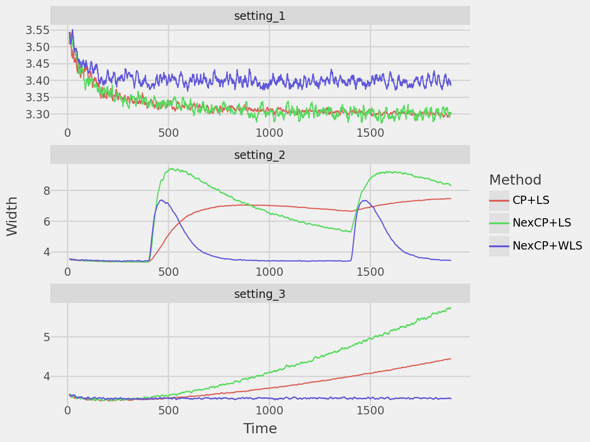

from great_tables import GT, md
import numpy as np
import numpy.typing as npt
import pandas as pd
from pathlib import Path
import plotnine as pn
import statsmodels.api as sm
from tqdm import tqdm
from typing import Any, Callable, List
base_dir = Path().cwd()
generator = np.random.default_rng()Conformal Prediction Beyond Exchangeability
Conformal Prediction
Replicating empirical examples from Conformal Prediction Beyond Exchangeability by Barber, et al.
Dependencies
Data
# Electricity data
electricity = pd.read_csv(base_dir / "data" / "electricity-normalized.csv")
electricity = (
electricity
.iloc[17760:]
.assign(period=lambda x: x.period*24)
.loc[lambda df: (df["period"] >= 9) & (df["period"] <= 12)]
[["transfer", "nswprice", "vicprice", "nswdemand", "vicdemand"]]
.reset_index(drop=True)
)
permuted = electricity.sample(frac=1).reset_index(drop=True)
# Function to generate simulated data
def sim_data(N: int, d: int, setting: int) -> tuple[pd.DataFrame, npt.NDArray]:
X = np.random.multivariate_normal(mean=np.zeros(d), cov=np.eye(d), size=N)
if setting == 1:
beta = np.array([2, 1, 0, 0])
y = X @ beta + np.random.normal(0, 1, N)
X = pd.DataFrame(X, columns=[f"feature_{i+1}" for i in range(d)])
elif setting == 2:
beta_1 = np.array([2, 1, 0, 0])
beta_2 = np.array([0, -2, -1, 0])
beta_3 = np.array([0, 0, 2, 1])
y = np.zeros(N)
# Generate y for different segments
y[:500] = X[:500] @ beta_1 + np.random.normal(0, 1, 500)
y[500:1500] = X[500:1500] @ beta_2 + np.random.normal(0, 1, 1000)
y[1500:] = X[1500:] @ beta_3 + np.random.normal(0, 1, 500)
X = pd.DataFrame(X, columns=[f"feature_{i+1}" for i in range(d)])
else:
beta_start = np.array([2, 1, 0, 0])
beta_end = np.array([0, 0, 2, 1])
beta = np.linspace(beta_start, beta_end, N)
y = np.array([X[i] @ beta[i] + np.random.normal(0, 1) for i in range(N)])
X = pd.DataFrame(X, columns=[f'feature_{i+1}' for i in range(d)])
return (X, y)Functions
The nexcp_split function implements non-exchangeable split conformal prediction (CP). However, we can force it to also implement standard CP, which assumes exchangeability, by setting uniform weights. So we only need one function to replicate the results!
def normalize_weights(weights: npt.NDArray):
return weights / weights.sum()
def nexcp_split(
model: Callable[[npt.NDArray, pd.DataFrame, npt.NDArray], Any],
split_function: Callable[[int], npt.NDArray],
y: npt.NDArray,
X: pd.DataFrame,
tag_function: Callable[[int], npt.NDArray],
weight_function: Callable[[int], npt.NDArray],
alpha: float,
test_index: int
):
"""Implements non-exchangeable split conformal prediction"""
# Pull test observation from data
y_test = y[test_index]
X_test = X.iloc[[test_index]]
# Select all observations up to that point
y = y[:test_index]
X = X.iloc[:test_index]
# Generate indices for train/calibration split
split_indices = split_function(test_index)
# Split data, tags, and weights
X_train = X.iloc[split_indices]
y_train = y[split_indices]
X_calib = X.drop(split_indices)
y_calib = np.delete(y, split_indices)
# Generate tags and weights
tags = tag_function(test_index)
weights = weight_function(test_index)
# Train model
model_base = model(y_train, X_train, weights=tags[split_indices])
model_fitted = model_base.fit()
# Generate residuals
residuals = np.abs(y_calib - model_fitted.predict(X_calib))
# Calculate weighted quantile of residuals
weights_calib = normalize_weights(np.delete(weights[:test_index], split_indices))
q_hat = np.quantile(
residuals,
1 - alpha,
weights=weights_calib,
method="inverted_cdf"
)
# Calculate predicted value
y_hat = model_fitted.predict(X_test).iloc[0]
# Generate CI
lb = y_hat - q_hat
ub = y_hat + q_hat
covered = lb <= y_test <= ub
return {"ci": np.array([lb, y_hat, ub]), "covered": covered, "width": ub-lb}
def plot_rolling_coverage(
results: List[dict],
alpha: float = 0.1,
window: int = 300,
rows: int = 2,
repeated: bool = False
):
"""Plot the algorithm's mean coverage over a sliding window"""
coverage_df = pd.DataFrame(results)
if repeated:
coverage_df = (
coverage_df
.groupby(["method", "dataset", "index"])["covered"]
.mean()
.reset_index()
)
coverage_df["coverage_mean"] = (
coverage_df
.groupby(["method", "dataset"])["covered"]
.transform(lambda x: x.rolling(window=window).mean())
)
coverage_df["time"] = coverage_df.groupby(["method", "dataset"]).cumcount() + 1
coverage_df = coverage_df.dropna(subset=["coverage_mean"])
coverage_plot = (
pn.ggplot(
coverage_df,
pn.aes(x="time", y="coverage_mean", color="method", group="method")
)
+ pn.geom_line()
+ pn.geom_hline(yintercept=1-alpha, linetype="solid")
+ pn.scale_y_continuous(limits=(0, 1))
+ pn.facet_wrap("~ dataset", nrow=rows, scales="free")
+ pn.theme_538()
+ pn.labs(x="Time", y="Coverage", color="Method")
)
return coverage_plot
def plot_rolling_width(
results: dict,
window: int = 300,
rows: int = 2,
repeated: bool = False
):
"""Plot the algorithm's mean prediction interval width over a sliding window"""
width_df = pd.DataFrame(results)
if repeated:
width_df = (
width_df
.groupby(["method", "dataset", "index"])["width"]
.mean()
.reset_index()
)
width_df["width_mean"] = (
width_df
.groupby(["method", "dataset"])["width"]
.transform(lambda x: x.rolling(window=window).mean())
)
width_df["time"] = width_df.groupby(["method", "dataset"]).cumcount() + 1
width_df = width_df.dropna(subset=["width_mean"])
width_plot = (
pn.ggplot(
width_df,
pn.aes(x="time", y="width_mean", color="method", group="method")
)
+ pn.geom_line()
+ pn.facet_wrap("~ dataset", nrow=rows, scales="free")
+ pn.theme_538()
+ pn.labs(x="Time", y="Width", color="Method")
)
return width_plotElectricity example
Note: I implement non-exchangeable split CP with least-squares by using WLS and setting all the tags to a uniform value. Standard CP is implemented by setting all the weights to a uniform value as mentioned above.
split_fn = lambda x: np.sort(generator.choice(x, int(np.floor(x*0.3)), replace=False))
results = []
# Create X and y for the normal and permuted data
X, y = (electricity.drop("transfer", axis=1), electricity["transfer"].to_numpy())
X_perm, y_perm = (permuted.drop("transfer", axis=1), permuted["transfer"].to_numpy())
# Predict for each observation from N=100 to N=len(electricity)
for i in tqdm(range(100, len(electricity)), total=len(electricity)-100):
for method in ["NexCP+LS", "NexCP+WLS", "CP+LS"]:
for dataset in ["Electricity", "Permuted"]:
if dataset == "Electricity":
X_model, y_model = (X, y)
else:
X_model, y_model = (X_perm, y_perm)
if method == "NexCP+LS":
tag_fn = lambda x: np.array([1.]*(x + 1))
weight_fn = lambda x: 0.99**np.arange(x, -1, -1)
elif method == "NexCP+WLS":
tag_fn = lambda x: 0.99**np.arange(x, -1, -1)
weight_fn = tag_fn
else:
tag_fn = lambda x: np.array([1.]*(x + 1))
weight_fn = tag_fn
out = nexcp_split(
model=sm.WLS,
split_function=split_fn,
y=y_model,
X=X_model,
tag_function=tag_fn,
weight_function=weight_fn,
alpha=0.1,
test_index=i
)
out["method"] = method
out["dataset"] = dataset
out["index"] = i
del out["ci"]
results.append(out)Plots
coverage_plot = plot_rolling_coverage(results, alpha=0.1, window=300)
coverage_plot.show()
width_plot = plot_rolling_width(results, window=300)
width_plot.show()
Table
table = (
pd
.DataFrame(results)
.groupby(["method", "dataset"])
.mean()
.reset_index()
)
table = (
table
.pivot_table(
index='method',
columns='dataset',
values=['covered', 'width']
)
)
table.columns = [f'{col[0]}_{col[1].lower()}' for col in table.columns]
table = table.reset_index()
table = (
GT(table, rowname_col="method")
.tab_spanner(
label="Electricity data",
columns=["covered_electricity", "width_electricity"]
)
.tab_spanner(
label="Permuted electricity data",
columns=["covered_permuted", "width_permuted"]
)
.fmt_number(
columns = [
"covered_electricity",
"width_electricity",
"covered_permuted",
"width_permuted"
],
decimals=3
)
.cols_label(
covered_electricity = "Coverage",
width_electricity = "Width",
covered_permuted = "Coverage",
width_permuted = "Width"
)
)
table.show()| Electricity data | Permuted electricity data | |||
| Coverage | Width | Coverage | Width | |
| CP+LS | 0.859 | 0.558 | 0.895 | 0.628 |
| NexCP+LS | 0.878 | 0.581 | 0.902 | 0.638 |
| NexCP+WLS | 0.880 | 0.497 | 0.895 | 0.629 |
Simulated example
This demonstrates the conformal prediction algorithm in the following data settings: i.i.d. data, data generating process with changepoints, and data with distribution drift. In the paper they repeat this 200 times to smooth the estimates, but for computational purposes here I only repeated it 50 times.
split_fn = lambda x: np.sort(generator.choice(x, int(np.floor(x*0.3)), replace=False))
results = []
# Predict for each observation from N=100 to N=len(electricity)
for i in tqdm(range(100, 2000), total=2000-100):
for rep in range(50):
for method in ["NexCP+LS", "NexCP+WLS", "CP+LS"]:
for dataset in ["setting_1", "setting_2", "setting_3"]:
if dataset == "setting_1":
X_model, y_model = sim_data(2000, 4, setting=1)
elif dataset == "setting_2":
X_model, y_model = sim_data(2000, 4, setting=2)
else:
X_model, y_model = sim_data(2000, 4, setting=3)
if method == "NexCP+LS":
tag_fn = lambda x: np.array([1.]*(x + 1))
weight_fn = lambda x: 0.99**np.arange(x, -1, -1)
elif method == "NexCP+WLS":
tag_fn = lambda x: 0.99**np.arange(x, -1, -1)
weight_fn = tag_fn
else:
tag_fn = lambda x: np.array([1.]*(x + 1))
weight_fn = tag_fn
out = nexcp_split(
model=sm.WLS,
split_function=split_fn,
y=y_model,
X=X_model,
tag_function=tag_fn,
weight_function=weight_fn,
alpha=0.1,
test_index=i
)
out["method"] = method
out["dataset"] = dataset
out["index"] = i
del out["ci"]
results.append(out)Plots
coverage_plot = plot_rolling_coverage(
results,
alpha=0.1,
window=10,
rows=3,
repeated=True
)
coverage_plot.show()
width_plot = plot_rolling_width(results, window=10, rows=3, repeated=True)
width_plot.show()

Table
table = (
pd
.DataFrame(results)
.groupby(["method", "dataset", "index"])
.mean()
.reset_index()
.drop(labels=["index"], axis=1)
.groupby(["method", "dataset"])
.mean()
.reset_index()
)
table = (
table
.pivot_table(
index="method",
columns="dataset",
values=["covered", "width"]
)
)
table.columns = [f"{col[0]}_{col[1].lower()}" for col in table.columns]
table = table.reset_index()
table = (
GT(table, rowname_col="method")
.tab_spanner(
label="Setting 1 (i.i.d. data)",
columns=["covered_setting_1", "width_setting_1"]
)
.tab_spanner(
label="Setting 2 (changepoints)",
columns=["covered_setting_2", "width_setting_2"]
)
.tab_spanner(
label="Setting 3 (drift)",
columns=["covered_setting_3", "width_setting_3"]
)
.fmt_number(
columns = [
"covered_setting_1",
"width_setting_1",
"covered_setting_2",
"width_setting_2",
"covered_setting_3",
"width_setting_3"
],
decimals=3
)
.cols_label(
covered_setting_1 = "Coverage",
width_setting_1 = "Width",
covered_setting_2 = "Coverage",
width_setting_2 = "Width",
covered_setting_3 = "Coverage",
width_setting_3 = "Width"
)
)
table.show()| Setting 1 (i.i.d. data) | Setting 2 (changepoints) | Setting 3 (drift) | ||||
| Coverage | Width | Coverage | Width | Coverage | Width | |
| CP+LS | 0.899 | 3.325 | 0.832 | 6.022 | 0.836 | 3.754 |
| NexCP+LS | 0.898 | 3.324 | 0.874 | 6.692 | 0.880 | 4.208 |
| NexCP+WLS | 0.897 | 3.403 | 0.896 | 4.114 | 0.897 | 3.440 |